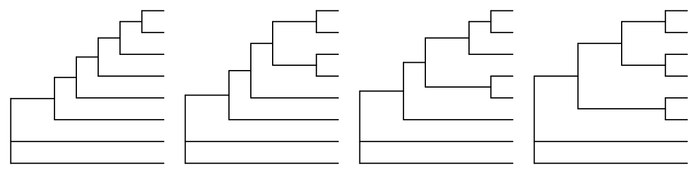
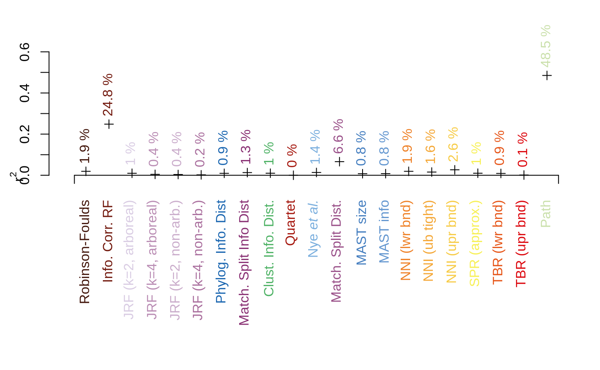

There are four unrooted tree shapes on eight leaves:

To evaluate the extent to which trees are ranked as less (or more) different simply because they exhibit the same shape, I evaluated the extent to which tree distance could be predicted based only on knowledge of the topology of the two input trees.

| r² | adjusted r² | |
|---|---|---|
| Robinson-Foulds | 0.0192 | 0.0190 |
| Info. Corr. RF | 0.2484 | 0.2483 |
| JRF (k = 2, no conflict) | 0.0097 | 0.0095 |
| JRF (k = 4, no conflict) | 0.0044 | 0.0042 |
| JRF (k = 2, conflict ok) | 0.0037 | 0.0035 |
| JRF (k = 4, conflict ok) | 0.0021 | 0.0019 |
| Phylog. Info. Dist | 0.0095 | 0.0093 |
| Match. Split Info Dist | 0.0130 | 0.0128 |
| Clust. Info. Dist. | 0.0100 | 0.0098 |
| Quartet | 0.0001 | -0.0001 |
| paste(plain(“Nye”), italic(“et al.”)) | 0.0136 | 0.0134 |
| Match. Split Dist. | 0.0661 | 0.0659 |
| MAST size | 0.0075 | 0.0074 |
| MAST info | 0.0078 | 0.0076 |
| NNI (lwr bnd) | 0.0192 | 0.0190 |
| NNI (ub tight) | 0.0156 | 0.0154 |
| NNI (upr bnd) | 0.0265 | 0.0263 |
| SPR (approx.) | 0.0099 | 0.0098 |
| TBR (lwr bnd) | 0.0089 | 0.0087 |
| TBR (upr bnd) | 0.0011 | 0.0009 |
| Path | 0.4852 | 0.4851 |